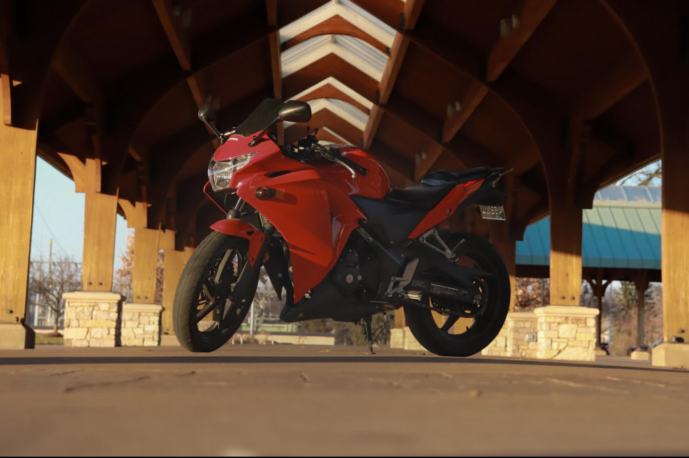
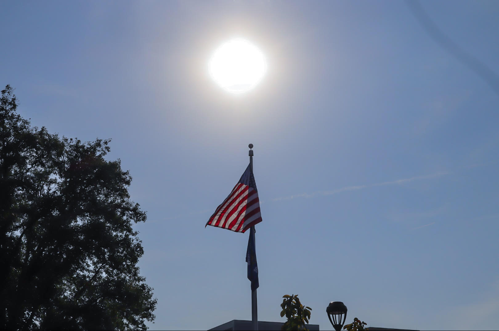
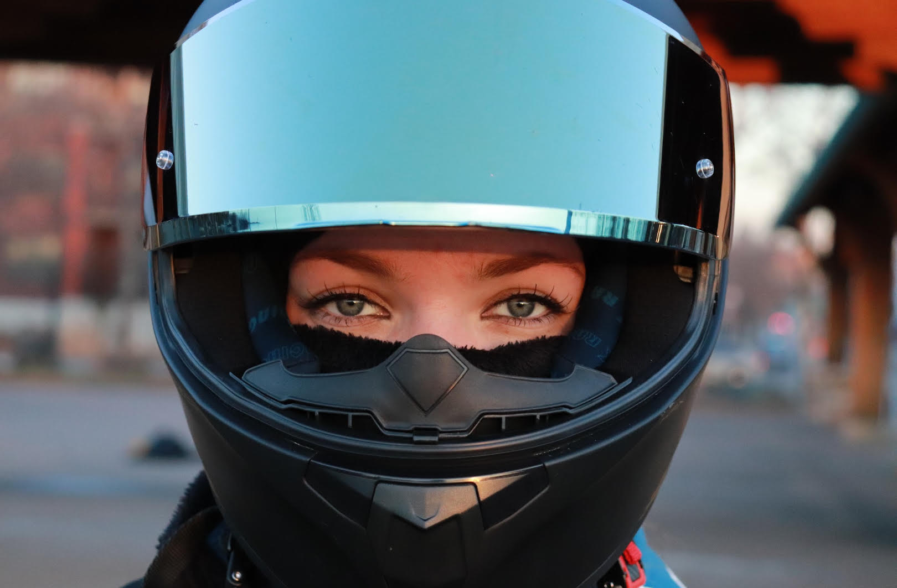
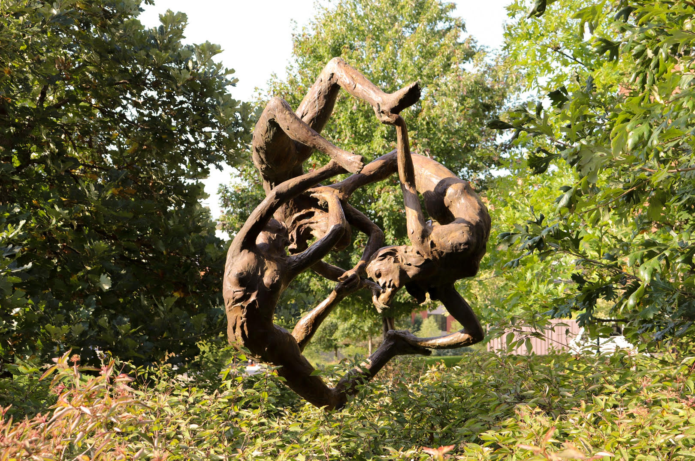
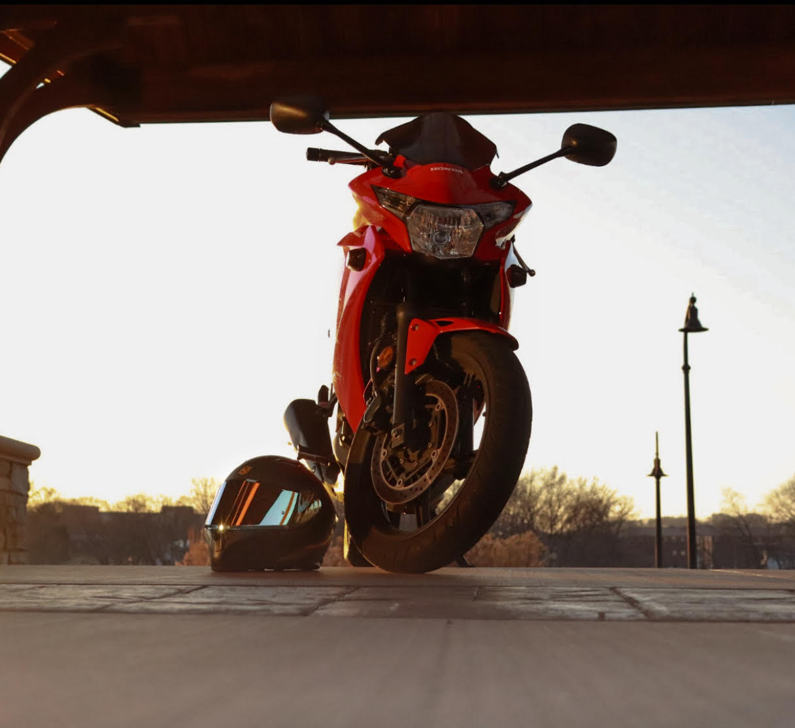

Hi, I am Annelise, the founder of aswigpix. I help clients like you to gather photos, videos, infographs, and create sebsites for their companies. I specialize in Adobe Photoshop, Adobe Indesign, Abobe Illustrator, and Adobe Audition.
I am currently a student at the University of Wisconsin-Eau Claire, majoring in public relations and minoring in multimedia. I am also the social media manager for Women’s Concert Chorale. Our Instagram is @woco_uwec if you would like to check it out! In high school, I was also the editor-in-chief of our yearbook staff for two years, and I also took graphic design, which was centered around Photoshop, Illustrator, and Indesign.
I am so excited to get in contact with you and work towards something great for you, and your company!
Media
    Contact Me
(715) 383-5714
aswigpix.20
swigz.ann@gmail.com